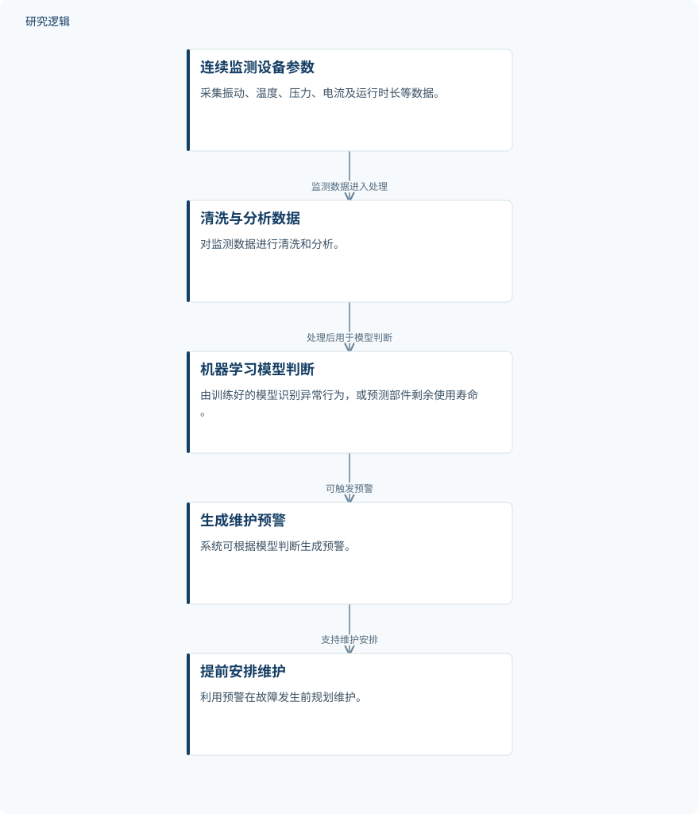

摘要解读
基于人工智能与机器学习的设备预测性维护
PREDICTIVE MACHINE MAINTENANCE USING ARTIFICIAL INTELLIGENCE AND MACHINE LEARNING
解读更新 2026-11-10 10:28 · 依据公开摘要整理，未核验全文细节
机器何时可能发生故障，能否在停机前安排维护？本文摘要围绕传感器数据与机器学习，介绍从状态监测到故障预警的基本流程，阅读价值在于理解预测性维护如何连接设备状态与维护决策，而非获取已验证的性能结论。
文章目录
维护时机：不只按日历，也不等到故障
意外设备故障可能中断生产、增加维修支出，并带来安全风险。摘要将预测性维护与固定周期检修、故障后维修相对照：其核心是持续观察设备状态，估计故障可能何时发生，为提前安排维护提供依据。
从传感器监测到维护预警
摘要描述的流程始于持续监测，涉及振动、温度、压力、电流和运行时长等参数。数据经过清洗与分析后，由训练好的机器学习模型识别异常行为，或预测部件的剩余使用寿命。随后，系统可生成预警，支持在故障发生前规划维护。
这里需要区分两类模型任务：识别异常行为与预测剩余使用寿命。摘要将它们列为可选功能，并未说明是否在同一系统中同时实现，也未给出具体算法、模型结构或训练细节。
依据摘要整理的预测性维护流程


仅概括摘要明确描述的数据处理与预警关系，是阅读示意图，不是论文原图，也不表示这些环节已获得实验验证。
下载 SVG图示关系说明
实线表示相邻阶段的信息流，虚线表示跨阶段联系或反馈。
持续监测设备参数 → 数据清洗与分析：监测数据处理；数据清洗与分析 → 训练好的机器学习模型：模型分析；训练好的机器学习模型 → 生成预警：支持预警；生成预警 → 提前规划维护：支持维护安排
摘要强调潜在价值，未给出量化成效
摘要认为，预测性维护可以改善设备可用性与维护规划，但没有报告可用于衡量改善幅度的实验结果。因此，这些表述应理解为潜在收益，不能解读为本文已经证明了停机减少、成本下降或预测精度提升。
从摘要的内容定位看，文章主要介绍概念、工作流程、主要技术、模型设计、应用及实施框架，同时讨论数据质量、模型评估、网络安全和人工核验。这些是其明确列出的讨论主题，而不是已完成验证的结果。
数据代表性与验证范围仍待确认
仅凭当前摘要，无法判断设备类型、样本规模、数据来源、故障类别，以及训练与测试如何划分；也无法确认是否设置比较方法、采用哪些评价指标，或开展了何种现场验证。摘要未报告这些信息，不等于论文没有开展相关工作。
此外，所提供摘要的末句在“suitable”处中断，能够确认的条件仅包括结果依赖具有代表性的数据，不能补写后续限定。对模型适用条件和实际部署可靠性的判断，仍需更多原文信息。
阅读启发：关注预警如何进入维护决策
阅读启发：进一步阅读时，可优先关注代表性数据如何界定、异常识别与寿命预测分别怎样评估，以及人工核验如何参与预警处理。这些问题直接承接摘要提出的数据质量、模型评估与人工核验主题，有助于区分“能够输出预测”与“足以支持维护安排”。
以上为本站阅读启发与建议，不是论文已验证的结论。